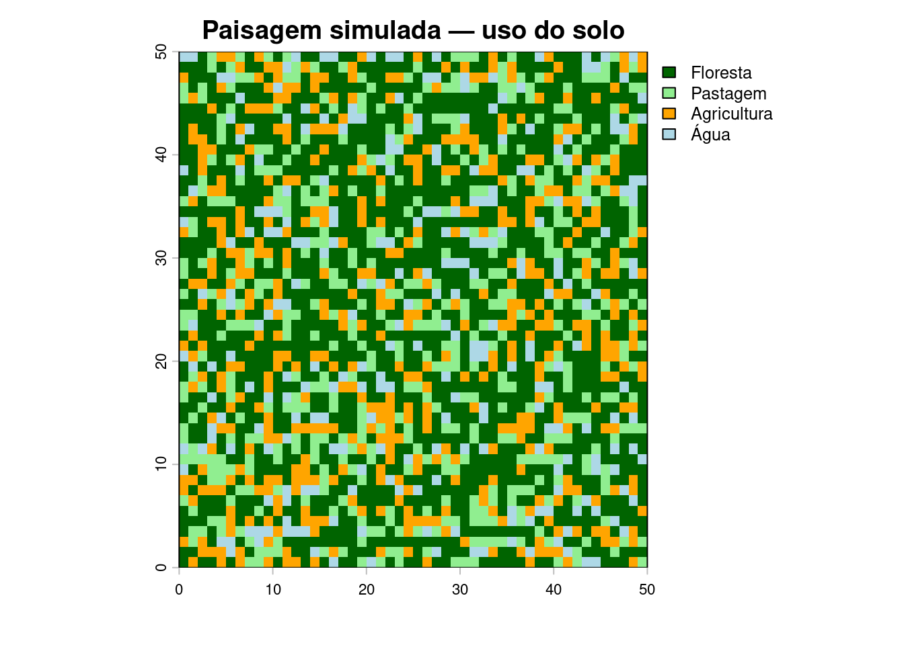
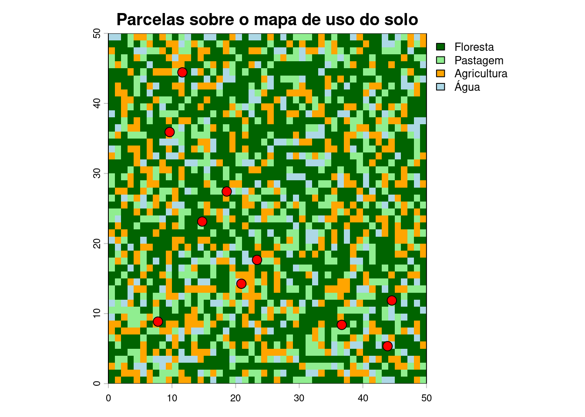
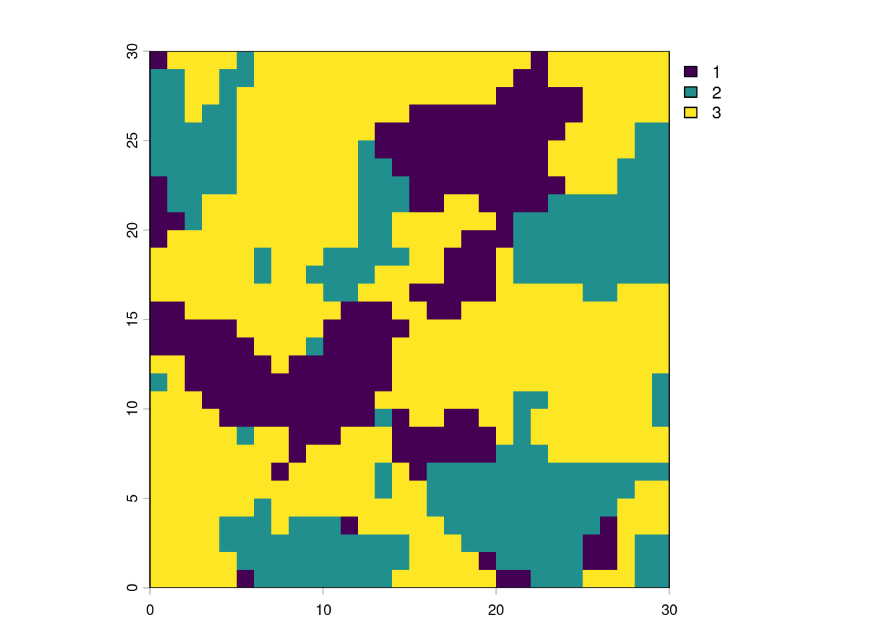
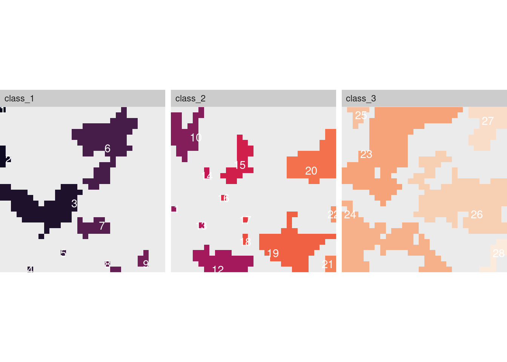
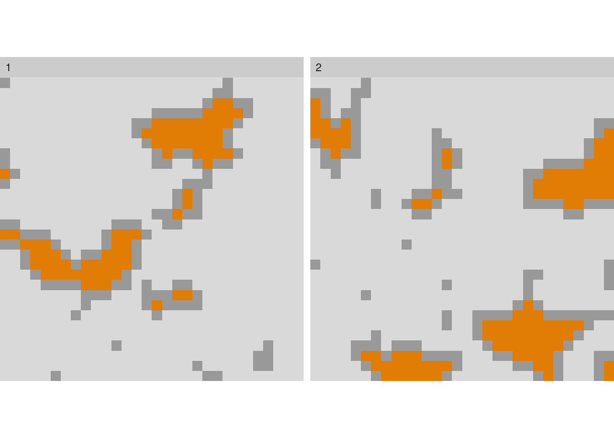
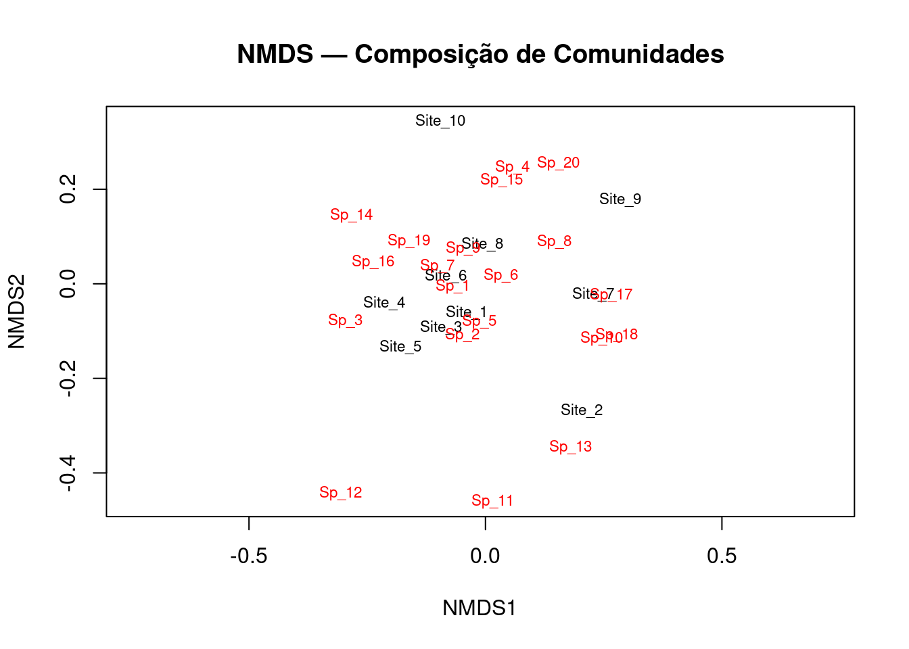

# Vetor com todos os pacotes necessários
pacotes <- c(
# Dados espaciais
"terra", # Análise de dados raster (sucessor moderno do 'raster')
"sf", # Dados vetoriais em formato tidy (Simple Features)
# Métricas de paisagem
"landscapemetrics", # >130 métricas de padrão de paisagem (substitui FRAGSTATS)
# Visualização
"tmap", # Mapas temáticos estáticos e interativos
"ggplot2", # Gráficos e visualizações gerais
"tidyterra", # Integração do terra com ggplot2
# Ecologia
"vegan", # Diversidade, ordenação, análises multivariadas
"iNEXT", # Rarefação e extrapolação de diversidade
# Manipulação de dados (Tidyverse)
"dplyr", # Manipulação de tabelas (filter, select, mutate...)
"tidyr", # Organização de dados (pivot_longer, pivot_wider...)
"readr", # Leitura de arquivos CSV e similares
"tibble", # Tabelas melhoradas (alternativa ao data.frame)
"purrr", # Programação funcional (map, walk...)
# Acesso a dados abertos
"geodata", # Download de dados climáticos, elevação, etc.
"rgbif", # Acesso ao GBIF (ocorrências de espécies)
"rnaturalearth", # Fronteiras e mapas-base do Natural Earth
"rnaturalearthdata", # Dados complementares do Natural Earth
"geobr" , # Shapefiles da geografia Brasileira
# Utilitários
"remotes", # Instalar pacotes do GitHub
"here" # Gerenciamento de caminhos de arquivo
)
# Instalar apenas os que ainda não estão instalados
novos <- pacotes[!(pacotes %in% installed.packages()[, "Package"])]
if (length(novos) > 0) {
cat("Instalando", length(novos), "pacote(s)...\n")
install.packages(novos)
} else {
cat("Todos os pacotes já estão instalados!\n")
}Exercício 3 - Pacotes R para Ecologia de Paisagens
Instalação, verificação e primeiros usos — BO-304
1 Por que precisamos de pacotes?
O R base é poderoso, mas a grande força da linguagem está nos seus pacotes — extensões desenvolvidas pela comunidade científica que adicionam funções especializadas. Para Ecologia de Paisagens, precisamos de pacotes que nos permitam:
- Ler e manipular dados espaciais (rasters e vetores)
- Calcular métricas de paisagem (fragmentação, conectividade, diversidade de habitats)
- Criar mapas e visualizações de alta qualidade
- Realizar análises estatísticas ecológicas
NotaPacotes vs. Bibliotecas
Em R, usamos o termo pacote (package). Em outras linguagens como Python, o equivalente é chamado de biblioteca (library). No R, library() é o comando usado para carregar um pacote já instalado — não confunda com o nome da coleção.
2 O ecossistema de pacotes desta disciplina
Os pacotes que usaremos podem ser agrupados por função:
| Grupo | Pacotes | Para que servem |
|---|---|---|
| Dados espaciais — Raster | terra |
Leitura, manipulação e análise de dados matriciais (GeoTIFF, etc.) |
| Dados espaciais — Vetor | sf |
Geometrias vetoriais (pontos, linhas, polígonos) em formato tidy |
| Métricas de paisagem | landscapemetrics |
Cálculo de >130 métricas de padrão de paisagem (substitui o FRAGSTATS) |
| Visualização de mapas | tmap, ggplot2 |
Mapas temáticos estáticos e interativos |
| Ecologia de comunidades | vegan |
Diversidade, ordenação, análises multivariadas |
| Manipulação de dados | tidyverse |
Conjunto de pacotes para ciência de dados (dplyr, tidyr, ggplot2…) |
| Acesso a dados abertos | rgbif, geodata |
Download de ocorrências (GBIF) e dados ambientais |
| Shapefiles geográficos do Basil | geobr |
Municípios, limites de estado e bbiomas |
3 Instalando os pacotes
3.1 Como funciona a instalação
A instalação de pacotes no R é feita com a função install.packages(). Os pacotes são baixados do repositório CRAN (Comprehensive R Archive Network).
ImportanteInstalar vs. Carregar
install.packages("nome")— instala o pacote no seu computador. Feito uma única vez.library(nome)— carrega o pacote para uso na sessão atual. Feito toda vez que você abrir o R.
3.2 Instalação de todos os pacotes da disciplina
Copie e execute este bloco de código no seu Console do RStudio (não precisa colocar no seu .qmd):
DicaPode demorar!
A primeira instalação pode levar 5 a 15 minutos dependendo da sua conexão. Aguarde até o cursor > reaparecer no Console. Não feche o RStudio durante o processo.
3.3 Verificando a instalação
Após a instalação, verifique se tudo funcionou carregando os principais pacotes:
library(terra)
library(sf)
library(landscapemetrics)
library(tmap)
library(vegan)
library(tidyverse)
cat("✓ Todos os pacotes carregados com sucesso!\n")Se nenhuma mensagem de erro aparecer (mensagens informativas em azul são normais), você está pronto para começar.
4 Conhecendo os pacotes principais
4.1 terra — Dados Raster
O terra é o pacote moderno para trabalhar com dados espaciais matriciais (rasters). Um raster é uma grade de células onde cada célula tem um valor — como uma imagem de satélite ou um mapa de uso do solo.
library(terra)terra 1.8.93# Criar um raster de exemplo (paisagem simulada)
set.seed(42)
r <- rast(nrows = 50, ncols = 50,
xmin = 0, xmax = 50, ymin = 0, ymax = 50)
# Simular 4 classes de uso do solo
values(r) <- sample(1:4, ncell(r), replace = TRUE,
prob = c(0.50, 0.20, 0.20, 0.10))
# Nomear as classes
levels(r) <- data.frame(
id = 1:4,
label = c("Floresta", "Pastagem", "Agricultura", "Água")
)
# Visualizar
plot(r,
col = c("darkgreen", "lightgreen", "orange", "lightblue"),
main = "Paisagem simulada — uso do solo",
mar = c(3, 3, 2, 6))
4.1.1 Operações básicas com rasters
# Informações do raster
print(r) # Dimensões, extensão, CRS
res(r) # Resolução espacial
ext(r) # Extensão geográfica
ncell(r) # Número total de células
freq(r) # Frequência de cada classe (tabela de área)4.2 sf — Dados Vetoriais
O sf (Simple Features) trabalha com dados vetoriais: pontos, linhas e polígonos. É totalmente integrado ao tidyverse.
library(sf)
# Criar pontos de amostragem simulados (ex: parcelas de campo)
set.seed(7)
parcelas <- st_as_sf(
data.frame(
id = 1:10,
longitude = runif(10, 5, 45),
latitude = runif(10, 5, 45),
riqueza = rpois(10, lambda = 12)
),
coords = c("longitude", "latitude"),
crs = NA # sem CRS definido para este exemplo
)
# print(parcelas)
# Visualizar sobre o raster
plot(r, col = c("darkgreen", "lightgreen", "orange", "lightblue"),
main = "Parcelas sobre o mapa de uso do solo")
plot(st_geometry(parcelas), add = TRUE, pch = 21,
bg = "red", cex = 1.5)
4.3 landscapemetrics — Métricas de Paisagem
Este é o pacote central da disciplina. O landscapemetrics é um pacote R para calcular métricas de paisagem para padrões categóricos em um fluxo de trabalho organizado (tidy). Pode ser usado como substituto direto do FRAGSTATS, oferecendo um fluxo reproduzível de análise de paisagem em um único ambiente.
NotaOs três níveis de métricas
Todas as funções no landscapemetrics começam com lsm_. A segunda parte do nome especifica o nível: patch (p), class (c) ou landscape (l).
- Patch (parcela/mancha) — métricas para cada fragmento individual
- Class (classe) — métricas agregadas por tipo de uso do solo
- Landscape (paisagem) — métricas para toda a paisagem
library(landscapemetrics)
library(terra)
# Carregar paisagem de exemplo interna do pacote
paisagem <- terra::rast(landscapemetrics::landscape)
# ---- VERIFICAÇÃO OBRIGATÓRIA antes de calcular métricas ----
check_landscape(paisagem) layer crs units class n_classes OK
1 1 NA NA integer 3 ❓# -------- VER A PAISAGEM CRIADA ARTIFICIALMENTE
plot(paisagem)
# ---- Métricas de PATCH (nível de fragmento) ----
# Área de cada fragmento (em hectares)
areas <- lsm_p_area(paisagem)
head(areas)# A tibble: 6 × 6
layer level class id metric value
<int> <chr> <int> <int> <chr> <dbl>
1 1 patch 1 1 area 0.0001
2 1 patch 1 2 area 0.0005
3 1 patch 1 3 area 0.0072
4 1 patch 1 4 area 0.0001
5 1 patch 1 5 area 0.0001
6 1 patch 1 6 area 0.008 # Distância ao vizinho mais próximo (isolamento)
isolamento <- lsm_p_enn(paisagem)
head(isolamento)# A tibble: 6 × 6
layer level class id metric value
<int> <chr> <int> <int> <chr> <dbl>
1 1 patch 1 1 enn 7
2 1 patch 1 2 enn 4
3 1 patch 1 3 enn 2
4 1 patch 1 4 enn 6.32
5 1 patch 1 5 enn 5
6 1 patch 1 6 enn 2.24# ---- Métricas de CLASS (nível de classe) ----
# Proporção de cada classe na paisagem
proporcao <- lsm_c_pland(paisagem)
print(proporcao)# A tibble: 3 × 6
layer level class id metric value
<int> <chr> <int> <int> <chr> <dbl>
1 1 class 1 NA pland 20.4
2 1 class 2 NA pland 26
3 1 class 3 NA pland 53.6# Total de borda por classe
borda <- lsm_c_te(paisagem)
print(borda)# A tibble: 3 × 6
layer level class id metric value
<int> <chr> <int> <int> <chr> <dbl>
1 1 class 1 NA te 181
2 1 class 2 NA te 203
3 1 class 3 NA te 296# ---- Métricas de LANDSCAPE (nível de paisagem) ----
# Índice de diversidade de Shannon
shannon <- lsm_l_shdi(paisagem)
print(shannon)# A tibble: 1 × 6
layer level class id metric value
<int> <chr> <int> <int> <chr> <dbl>
1 1 landscape NA NA shdi 1.01# Área total
area_total <- lsm_l_ta(paisagem)
print(area_total)# A tibble: 1 × 6
layer level class id metric value
<int> <chr> <int> <int> <chr> <dbl>
1 1 landscape NA NA ta 0.094.3.1 Calculando múltiplas métricas de uma vez
# Calcular várias métricas simultaneamente
metricas <- calculate_lsm(
paisagem,
what = c(
"lsm_l_ta", # Área total
"lsm_l_shdi", # Diversidade de Shannon
"lsm_l_pd", # Densidade de fragmentos
"lsm_c_pland", # Proporção de cada classe
"lsm_c_np" # Número de fragmentos por classe
)
)
print(metricas)# A tibble: 9 × 6
layer level class id metric value
<int> <chr> <int> <int> <chr> <dbl>
1 1 class 1 NA np 9
2 1 class 2 NA np 13
3 1 class 3 NA np 6
4 1 class 1 NA pland 20.4
5 1 class 2 NA pland 26
6 1 class 3 NA pland 53.6
7 1 landscape NA NA pd 31111.
8 1 landscape NA NA shdi 1.01
9 1 landscape NA NA ta 0.09# Listar TODAS as 130+ métricas disponíveis
# list_lsm() # descomente para ver a lista completa4.3.2 Visualizando fragmentos
# Visualizar fragmentos rotulados por classe
show_patches(paisagem, class = "all", labels = TRUE)$layer_1
# Visualizar área de núcleo (interior dos fragmentos)
show_cores(paisagem, class = c(1, 2))$layer_1
4.4 tmap — Mapas Temáticos
O tmap cria mapas de alta qualidade com uma sintaxe intuitiva, parecida com o ggplot2.
#| eval: true
#| warning: false
library(tmap)
library(terra)
# Criar paisagem simulada para o mapa
set.seed(42)
r <- rast(nrows = 50, ncols = 50,
xmin = -35.5, xmax = -35.0,
ymin = -8.5, ymax = -8.0,
crs = "EPSG:4326")
values(r) <- sample(1:4, ncell(r), replace = TRUE,
prob = c(0.50, 0.20, 0.20, 0.10))
levels(r) <- data.frame(
id = 1:4,
label = c("Floresta", "Pastagem", "Agricultura", "Água")
)
# Modo interativo
tmap_mode("view") # mapa interativo (navegável)
tm_shape(r) +
tm_raster(
col.scale = tm_scale_categorical(
values = c("darkgreen", "lightgreen", "orange", "lightblue")
),
col.legend = tm_legend(title = "Uso do Solo")
) +
tm_title("Paisagem Simulada — Pernambuco") +
tm_scalebar()#| eval: true
#| warning: false
# Modo estático (para publicação)
tmap_mode("plot")
tm_shape(r) +
tm_raster(
col.scale = tm_scale_categorical(
values = c("darkgreen", "lightgreen", "orange", "lightblue")
),
col.legend = tm_legend(title = "Uso do Solo")
) +
tm_title("Paisagem Simulada") +
tm_scalebar(position = c("left", "bottom")) +
tm_compass(position = c("right", "top"))4.5 vegan — Ecologia de Comunidades
O vegan é o pacote padrão para análises de diversidade e estrutura de comunidades.
library(vegan)
# Dados simulados: matriz de abundância (sites × espécies)
set.seed(99)
comunidades <- matrix(
rpois(10 * 20, lambda = c(rep(5, 100), rep(1, 100))),
nrow = 10, ncol = 20,
dimnames = list(
paste0("Site_", 1:10),
paste0("Sp_", 1:20)
)
)
comunidades Sp_1 Sp_2 Sp_3 Sp_4 Sp_5 Sp_6 Sp_7 Sp_8 Sp_9 Sp_10 Sp_11 Sp_12 Sp_13
Site_1 5 5 3 5 7 6 8 2 5 2 0 1 1
Site_2 2 5 2 4 5 7 4 6 6 7 2 2 4
Site_3 6 3 7 4 7 6 6 4 2 3 1 0 1
Site_4 11 6 5 5 8 10 6 4 5 5 0 5 1
Site_5 5 6 7 2 5 4 5 5 4 3 1 1 0
Site_6 9 6 4 5 8 7 7 2 3 3 1 0 1
Site_7 6 4 0 6 4 2 5 5 2 9 0 0 1
Site_8 4 2 7 7 4 5 8 2 4 5 1 0 3
Site_9 4 2 0 5 5 8 1 6 2 4 0 0 0
Site_10 3 3 3 10 2 4 7 6 7 1 0 0 0
Sp_14 Sp_15 Sp_16 Sp_17 Sp_18 Sp_19 Sp_20
Site_1 0 1 1 1 1 1 1
Site_2 0 2 0 2 1 0 1
Site_3 1 1 2 1 1 1 0
Site_4 4 0 2 1 0 1 1
Site_5 1 0 2 0 2 3 1
Site_6 2 1 2 3 0 2 2
Site_7 0 1 0 2 1 2 2
Site_8 1 1 1 2 0 2 3
Site_9 1 0 1 2 2 0 2
Site_10 1 3 1 0 0 2 2# ---- Diversidade alfa ----
div_shannon <- diversity(comunidades, index = "shannon")
div_simpson <- diversity(comunidades, index = "simpson")
riqueza <- specnumber(comunidades)
resultados_div <- data.frame(
site = rownames(comunidades),
riqueza = riqueza,
shannon = round(div_shannon, 3),
simpson = round(div_simpson, 3)
)
print(resultados_div) site riqueza shannon simpson
Site_1 Site_1 18 2.610 0.913
Site_2 Site_2 17 2.679 0.924
Site_3 Site_3 18 2.640 0.917
Site_4 Site_4 17 2.629 0.918
Site_5 Site_5 17 2.668 0.923
Site_6 Site_6 18 2.678 0.920
Site_7 Site_7 15 2.501 0.905
Site_8 Site_8 18 2.696 0.922
Site_9 Site_9 14 2.440 0.899
Site_10 Site_10 15 2.482 0.900# ---- Ordenação (NMDS) ----
nmds <- metaMDS(comunidades, distance = "bray",
trymax = 50, trace = FALSE)
cat("Stress do NMDS:", round(nmds$stress, 3), "\n")Stress do NMDS: 0.137 # Stress < 0.1 = excelente; < 0.2 = bom; > 0.3 = problemático
# Visualizar
plot(nmds, type = "t", main = "NMDS — Composição de Comunidades")
5 Fluxo de trabalho integrado
Veja como esses pacotes se conectam em uma análise típica de Ecologia de Paisagens:
<!-- #| eval: true -->
library(terra)
library(landscapemetrics)
library(ggplot2)
library(dplyr)
# 1. CARREGAR paisagem (aqui usamos exemplo interno)
paisagem <- terra::rast(landscapemetrics::landscape)
# 2. VERIFICAR a paisagem
check_landscape(paisagem)
# 3. CALCULAR métricas de fragmento (área e isolamento)
metricas_patch <- calculate_lsm(
paisagem,
what = c("lsm_p_area", "lsm_p_enn", "lsm_p_para")
)
# 4. ORGANIZAR os resultados com dplyr
fragmentos <- metricas_patch |>
select(class, id, metric, value) |>
tidyr::pivot_wider(names_from = metric, values_from = value) |>
rename(area = area, isolamento = enn, perimetro_area = para)
head(fragmentos)
# 5. VISUALIZAR a relação área × isolamento
ggplot(fragmentos, aes(x = area, y = isolamento, color = factor(class))) +
geom_point(size = 3, alpha = 0.7) +
scale_color_manual(
values = c("1" = "darkgreen", "2" = "orange", "3" = "steelblue"),
labels = c("Classe 1", "Classe 2", "Classe 3"),
name = "Classe"
) +
labs(
title = "Relação Área × Isolamento dos Fragmentos",
x = "Área do fragmento (ha)",
y = "Distância ao vizinho mais próximo (m)",
caption = "Métricas calculadas com landscapemetrics"
) +
theme_classic(base_size = 13)6 Diagnóstico e solução de problemas
6.1 Erros comuns na instalação
6.1.1 Erro: package 'X' is not available
Significa que o pacote não foi encontrado no CRAN. Possíveis causas:
# 1. Verifique se escreveu o nome corretamente (R é case-sensitive!)
install.packages("landscapemetrics") # ✓ correto
install.packages("LandscapeMetrics") # ✗ errado
# 2. Atualize a lista de repositórios
install.packages("landscapemetrics", repos = "https://cloud.r-project.org")6.1.2 Erro: there is no package called 'X'
Significa que o pacote foi instalado mas não carregado. Solução:
# Instale primeiro, depois carregue
install.packages("terra") # instalar (uma vez)
library(terra) # carregar (toda sessão)6.1.3 Erro no terra relacionado ao GDAL
O terra depende de bibliotecas externas (GDAL, PROJ). Se ocorrer erro na instalação:
# No Windows: instale a versão binária pré-compilada
install.packages("terra", type = "binary")
# No macOS: instale via Homebrew antes do R
# brew install gdal proj geos6.2 Verificação rápida do ambiente
Use este bloco para diagnóstico rápido:
# Verificar versão do R
R.version.string
# Verificar pacotes instalados e suas versões
pacotes_check <- c("terra", "sf", "landscapemetrics", "tmap", "vegan", "tidyverse")
for (pkg in pacotes_check) {
if (requireNamespace(pkg, quietly = TRUE)) {
v <- packageVersion(pkg)
cat(sprintf("✓ %-20s versão %s\n", pkg, v))
} else {
cat(sprintf("✗ %-20s NÃO instalado\n", pkg))
}
}6.3 Mantendo pacotes atualizados
# Verificar e atualizar todos os pacotes instalados
update.packages(ask = FALSE, checkBuilt = TRUE)
DicaAtualize os pacotes no início de cada semestre
Pacotes como terra e sf são atualizados com frequência. Manter versões recentes evita incompatibilidades e garante acesso às funções mais novas.
7 Resumo: script de configuração completa
Salve este script como 00_setup.R na raiz do seu projeto. Execute-o uma vez no início da disciplina:
# =============================================================
# 00_setup.R
# Script de configuração inicial — Ecologia de Paisagens BO-304
# Execute UMA VEZ no início da disciplina
# =============================================================
# ---- 1. Lista de pacotes necessários ----
pacotes <- c(
"terra", "sf",
"landscapemetrics",
"tmap", "ggplot2", "tidyterra",
"vegan", "iNEXT",
"dplyr", "tidyr", "readr", "tibble", "purrr",
"geodata", "rgbif",
"rnaturalearth", "rnaturalearthdata",
"remotes", "here"
)
# ---- 2. Instalar os que faltam ----
novos <- pacotes[!(pacotes %in% installed.packages()[, "Package"])]
if (length(novos) > 0) {
message("Instalando ", length(novos), " pacote(s) novo(s)...")
install.packages(novos)
} else {
message("Todos os pacotes já estão instalados.")
}
# ---- 3. Verificação final ----
message("\n=== VERIFICAÇÃO DOS PACOTES ===")
for (pkg in pacotes) {
ok <- requireNamespace(pkg, quietly = TRUE)
cat(ifelse(ok, "✓", "✗"), sprintf(" %-25s", pkg),
ifelse(ok, paste("v", packageVersion(pkg)), "FALHOU"), "\n")
}
message("\nConfiguracao concluida! Versao do R: ", R.version.string)8 Referências dos pacotes
Ao usar estes pacotes em relatórios e publicações, cite-os corretamente:
# Ver como citar um pacote
citation("landscapemetrics")
citation("terra")
citation("vegan")| Pacote | Referência principal |
|---|---|
terra |
Hijmans R (2024). terra: Spatial Data Analysis. R package. |
sf |
Pebesma E (2018). Simple Features for R. The R Journal 10(1):439–446. |
landscapemetrics |
Hesselbarth et al. (2019). Ecography 42:1648–1657. |
vegan |
Oksanen et al. (2024). vegan: Community Ecology Package. R package. |
tmap |
Tennekes M (2018). Journal of Statistical Software 84(6):1–39. |
NotaRecursos adicionais
- Geocomputation with R — livro gratuito e completo sobre
sfeterra - Documentação do landscapemetrics
- Site da disciplina
Tutorial criado para a disciplina BO-304 — Ecologia de Paisagens, UFPE, 2026.1.